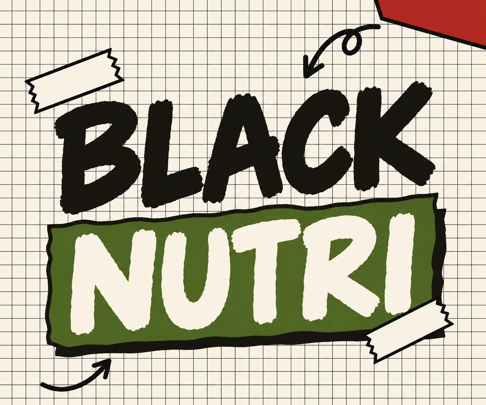

Thalita Braga Concursos | Mentor Nutri7 materiais de concurso para Nutricionista por menos da metade do preço.
Até 06/11, por R$ 157,90. Separados, custam R$ 495,50.
O que tem em cada material
TranspetroResumos por bloco do edital
Resumos no padrão Cesgranrio, organizados pelos blocos do edital de Nutricionista da Transpetro, com bônus.
NutriExpressResumos, mapas mentais e tabelas
Resumos para revisar a Nutrição inteira, sem montar resumo do zero, com um kit de revisão rápida de bônus.
SUS DescomplicadoNormas esquematizadas
As normas oficiais do SUS esquematizadas em resumos, com mapas mentais e questões comentadas de cada uma.
Bônus: o que mais cai no SUS, guia anti-pegadinha, cronograma de estudos e questões comentadas.
PortuguêsOs 12 temas do edital
Apostilas de Língua Portuguesa para concursos, nos tópicos do edital da Transpetro.
- Compreensão e interpretação de textos
- Ortografia oficial
- Mecanismos de coesão textual
- Significação das palavras
- Emprego de tempos e modos verbais
- Emprego das classes de palavras
- Coordenação e subordinação
- Emprego dos sinais de pontuação
- Concordância verbal e nominal
- Regência verbal e nominal
- Emprego do sinal indicativo de crase
- Colocação dos pronomes átonos
46 Provas FGVProvas por disciplina
Provas de Nutricionista da FGV separadas por disciplina. Você estuda um assunto por vez e confere no gabarito.
17 Provas CesgranrioProvas por disciplina
Provas de Nutricionista da Cesgranrio separadas em 12 disciplinas, com a incidência de cada uma. Você vê por onde começar.
Aula InauguralAo vivo, 02 e 03/12, às 19h
Aula inaugural do Curso Preparatório para Concursos Públicos, ao vivo, em 02 e 03/12, às 19h.